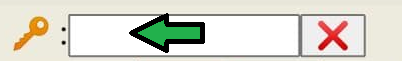
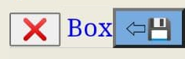
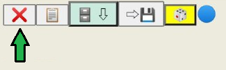
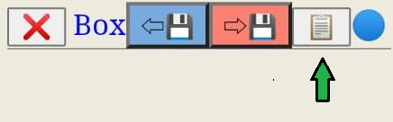
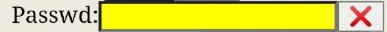
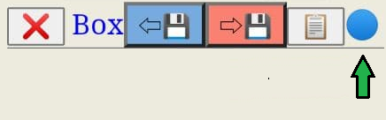
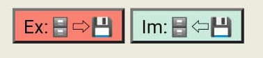
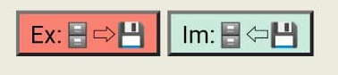

Background
(If you are impatient, just click here to jump directly to how to play)
This app is start as a gadget-ware and consider as a play-thing to sharpen my javaScript skills. The user-interface maybe seem as primitive, and please feel free to fork this project and get a more sophisticated layout.
Besides, if you got an idea to add new feature, please create an issue on github and I will investigate the possibility to get it done.
Some User Interface experts may prefer using a JavaScript front-end framework like ReactJS or AngularJS to implement a solution similar to this, but I prefer to keep the dependency as minimum as possible and only include necessary external javaScript for corresponding functionality; besides using those great frameworks for a simple task like this is an overkill.
Typical use cases of this web app
- Just a simple note taking app with local save and load (part of this ReadMe is actually typing via this webapp);
- Stored some of common phrases you used in Instant messaging apps like WhatsApp, Telegram, and use the copy-and-paste;
- A off-line store of links/favorites, and encrypt the links with GnuPG/password, so those nosy peoples can not see your stored links (esp. useful for some porn site 🙈)
- Using it as a quick-and-dirty interface for GnuPG encryption for short text message;
- A quick Cheque book of long command if you are a command line interface (CLI) user of Shell in Linux, (that is also my way to use too);
- Store your common used REST API URL for triggering a Web-hook; (if you know what I am talking about...😏)
Limitation of this app
- No un-do functionality (or ctrl-z), it will would be pretty nasty if you select a big block of typing and accidentally hit another key on the keyboard, your hard work of typing will just replace by a single character. So store you typing work often;
- There is an ultimate conflict between the ease of usage and protection of personal data, and this apps will also have the same pain-point.
If you just store your typing in the textbox as plaintext, some nosy eyes may see your info. On the flip side of the coin, if you do the encryption for every inputs, it will not only a cumbersome task and it also take-up extra store space (the encrypted text will take at least 20% more space and this wastage will be more if you plain text string is much shorter).
The nuts-and-bolts/internal of this app
In most of the modern age browser, there is a storage space in local browser to keep setting of individual web-site/URL. And in normal circumstance this storage isolated from site to site and size of storage is 5 MB. This number may seems not too much in today's technology standard(a single file of photo image with 21 megapixels in raw format will take up 25M), but if it is counted as plain ASCII characters. It can store the King James Authorized Bible with 783,137 words (consider average characters per word is 6).
This local storage is organized as a Key-Value pair. And this also the foundation of how this app stored your input information. Please also be aware that in Private/incognito mode your browser will dump all the local storage when page is closed and you better export the content before you close the page.(we come to this export later)
Back to way how the Key-Value pairs is stored in your browser, you can imagine a picture: when you keep on feeding your info into of this local storage basket, you will come to a situation that too much Keys will be needed to browse thro' when your need to grab particular stored values/items. So that why we added a Page to help you organize your Keys.
Since your info will be stored as plain characters in your storage, if someone can popup the browser on your device and navigate to this site, this Mr Stranger will read all the stored info. And that is how the password encryption can help you out. But a word of caution, the GnuPG is a robust encryption method, and THERE IS NOT WAY to decrypt back to plain text if you forgot the password.
You may also found a combo box called PubKey, that is for the storage Public keys for asymmetric encryption. If you already know about GnuPG you will know how to work with it. If you don't, just skip it at the present moment and come back to this features when you are ready; you can also start to google this on web to start your self-learning about GnuPG asymmetric encryption.
How to play with this app
- First, input the Key on the box on the top left.
- Second, typing your contents in the bigger box underneath,

- You may aware that a button is staying the top of the bigger box;

when you click it, it popup a file selection box and you can pick a file and this web app will read the content of file will be loaded in the box. (If you load a non text file, it will show some rubbish and you can clear the box with clear button (a red cross button ❌) on the right-down corner.

- The button near to the clear button is a copy button (icon of a clipboard 📋 ), it will select and copy the box content.

- The store button (icon of cabinet 🗄), it will store your typed contents into data store;
- Since no Page is existed in the first usage, and Page combo box will stay at (new), and it means that you will need to input the page name for ease of operation.
You may ask: if some thing already existed in the cabinet under the same Key, what will happened, the apps will confirm with you whether you like to overwrite it.
- The arrow disc ⇨💾 is for save/export the box content into an external text file,

when click it your browser will prompt you for a filename, and you will 'Download' a text file with what you typed in the box to your normal Download directory.
- Now we come to password encryption part, after you feed the passwd in the box,

you can press encBox button to encrypt the box content,
you will see your contents covert to a block of random characters; you can reverse the action by pressing decBox key.
For this encrypted block of random characters, you can either store it in the cabinet/data store, or using save it by pressing arrow disc ⇨💾 button.
- Next to encBox/decBox buttons pair is a blue dot,

this dot will turn RED if you change the typed content in the Box, and it will remain you to store the changes when you move to another page or select other Key. You may discard the changed content by click on the RED dot and confirm your intension by confirmation in popup box.
How the stored data organized
The stored items will show as a two column table, since you stored item can very long, and shown contents will be trimmed by ..., this adjustment is only done for display purpose, the actual contents will NOT be modified in any way. The length of characters shown is adjustable with an internal command '_width:' and we will discuss it later.
 You can also see boxes stated as Filter with red fonts, it help you further narrow down you search (especially you keys on the same page has been growth significantly), just click the corresponding boxes and key in the characters you are looking for.
Now come to part I like most: it is the clicking on the data store table, when you click it the corresponding row will lite with blue color. And both of Key/Box will be update with your selection; whether you click the left side (Key) or Right (Box) will have one slight but useful difference: the content will be auto-copy to your clip-broad when you can on the right-column (Box).
You can also see boxes stated as Filter with red fonts, it help you further narrow down you search (especially you keys on the same page has been growth significantly), just click the corresponding boxes and key in the characters you are looking for.
Now come to part I like most: it is the clicking on the data store table, when you click it the corresponding row will lite with blue color. And both of Key/Box will be update with your selection; whether you click the left side (Key) or Right (Box) will have one slight but useful difference: the content will be auto-copy to your clip-broad when you can on the right-column (Box).
 At the bottom data store table, that is Delete ❌ pair button. It will delete the selected/highlighted row. Be relaxed, the app will prompt for your confirmation before the actual action, unless you enable the OneKey delete checkbox near to it, so use your power wisely.
The third button is an interesting one, it will generate the xxh32 checksum of your data store, it will be an inevitable part to keep the sync of multi copies between devices. And checksum will also turn red to remind you had change anything after you last export.

At the bottom data store table, that is Delete ❌ pair button. It will delete the selected/highlighted row. Be relaxed, the app will prompt for your confirmation before the actual action, unless you enable the OneKey delete checkbox near to it, so use your power wisely.
The third button is an interesting one, it will generate the xxh32 checksum of your data store, it will be an inevitable part to keep the sync of multi copies between devices. And checksum will also turn red to remind you had change anything after you last export.

Last two button stay at the bottom of tha page, import/export. Ex is used to export your data store to an offline file. Since the stored contents will be exported as plain text json, (unless you have already encrypt it before you store it). This app will add another layer protection to help you. You may either feed a data store encrypting pass word, (it is/can be another password from the one you use in contents encryption, but again please be aware that the lost/forgotten passwd is NOT recoverable). Or you may pick the corresponding public key from the combo box.
If you opt out both options (keep the passwordd enc box blank and select none from PubKey combo), the app will export the data store to plain text json, after your confirmation.
The import is just a reverse of export function, it reads the file from your Download directory. Again you need to input the correct password in order to restore data store in the previous exported file.
Something missing...ü§î
If you are smart enough, you may notice that I have missed the description about a check box near to the padlock 🔓. That is a feature you don't need to use in most of the cases. When I coding the functionality of swap pages, I clear out the Key/Box on purpose, so it would not mess up when you switch pages. But if you like to 'move' one Key-Box pair from one page to another, you will need to lock the Key/Box pair by engaged this checkbox, by doing this: the data will be untouched when you swap to the destination page, then press cabinet down button to store it. Don't forget to delete the original keyBox pair in old pages.
Next to the pad lock checkbox, you can see another checkbox labeled with ⚡Swap, there is called quick swap. That is another convenience-but-potentially-harmful feature. When you swap page with some typed text in the box, the app will confirm with you either to go-ahead and clear out the box, or cancel the action and save you typing then move on. If you enable this quick swap, all friendly reminding popup boxes will be shut-off, so again:‚ÄúWith great power comes great responsibility‚Äù
Last but not least
That is about the internal command thing. When I learn object orientated programming, one feature is called function overloading. So I use this trick in the Key input box, when you input a Key "_help" in the text box and press the delete button ❌ near to it, voil√†, the Box will show the help of this app.
The help is self-explanatory, but I recap some main points:
-
If you like to change the Box column width to 20 characters on the data store table input "_width:20" (without quote);
-
For import the public key under the name "PubKey1", paste the key in Box. Then input "_addPk:PubKey1", and press the delete ❌ button.
To remove a stored Public Key, replace _addPk with _rmPk:PubKey1;
-
If you like to ☢nuke☢ all the stored content, use "_killall". The app will make-it-so after your confirmation.
Something before class dismissed